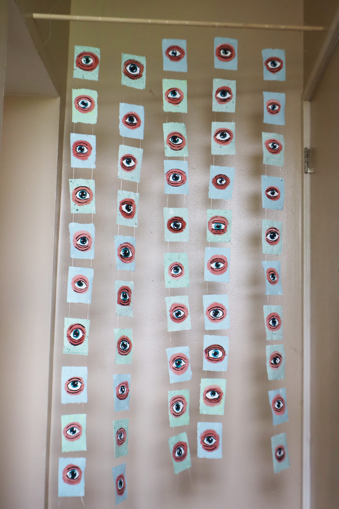
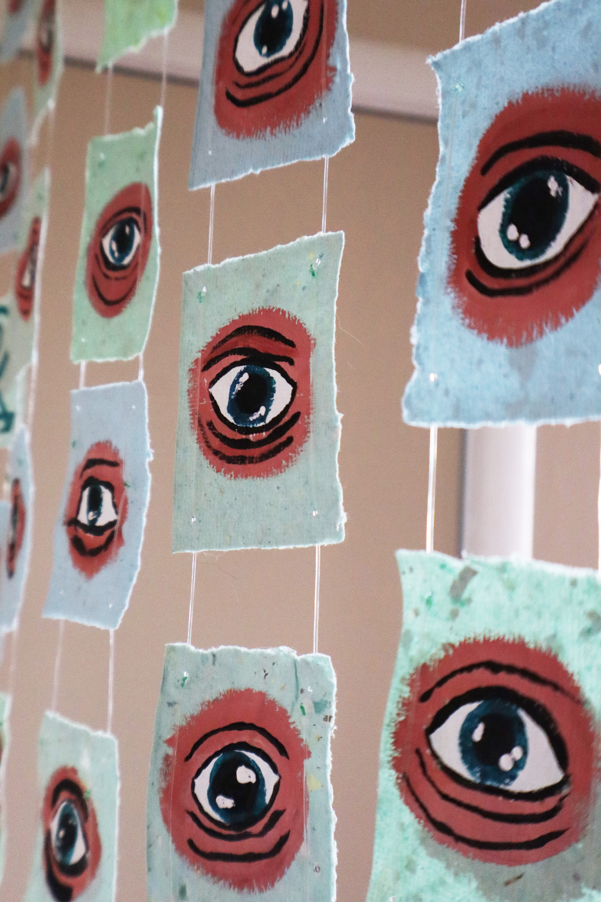
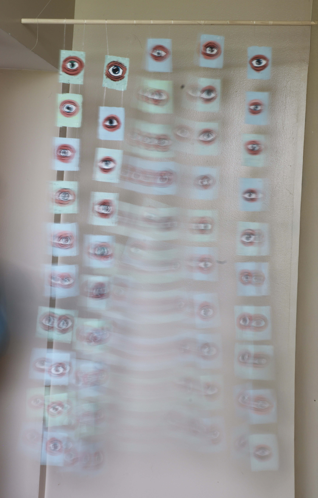
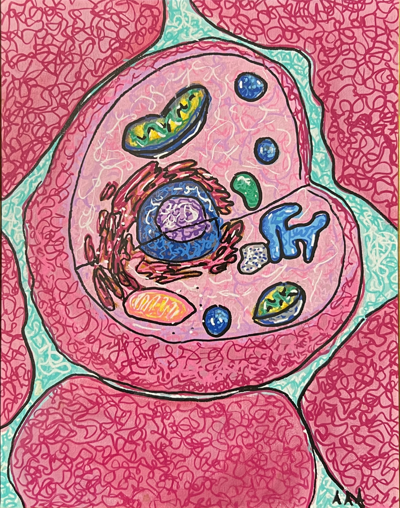
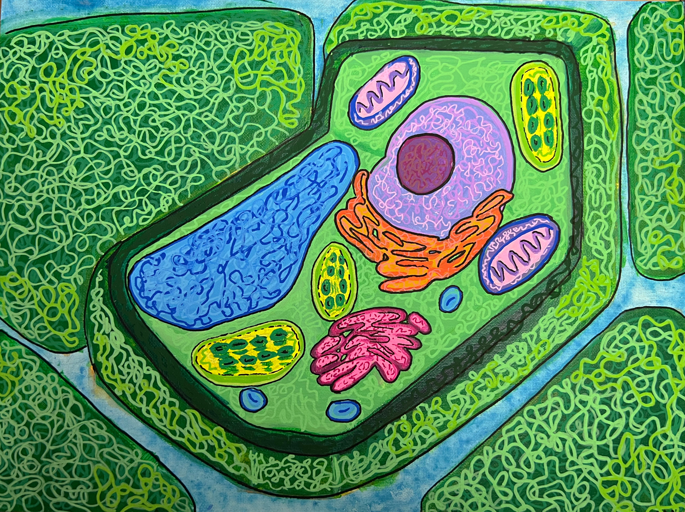
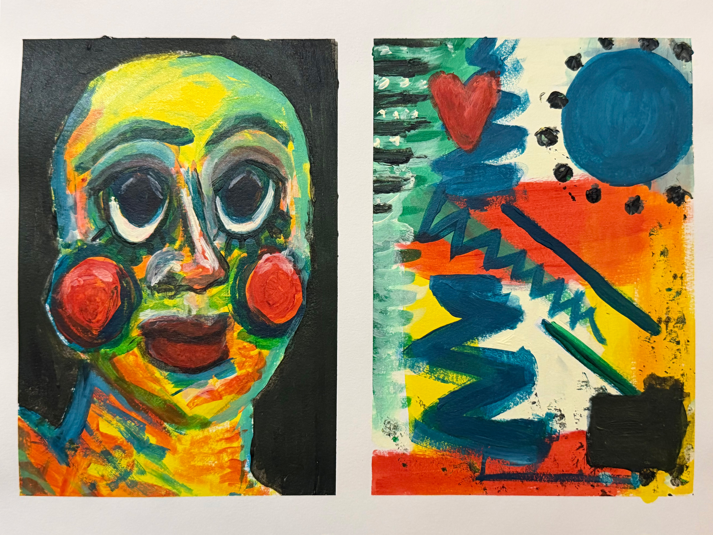
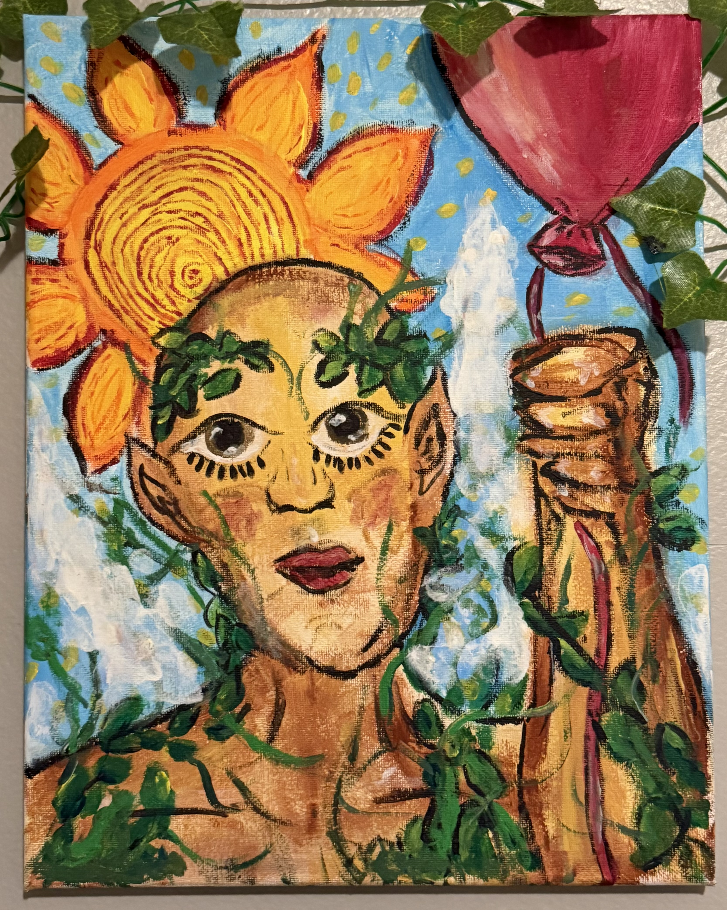
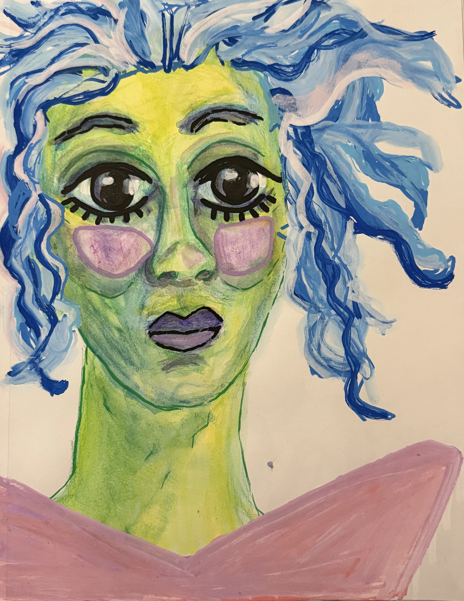
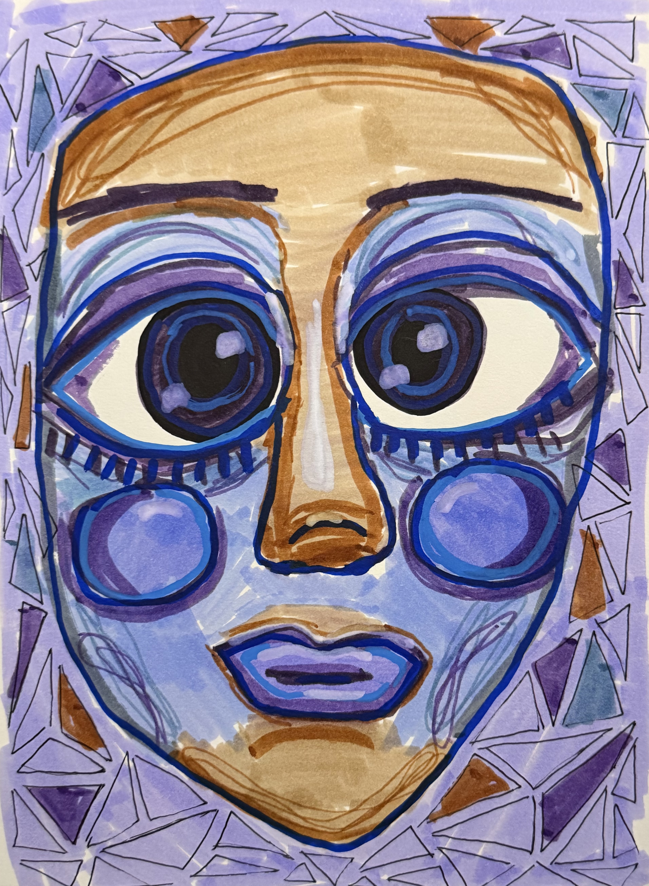
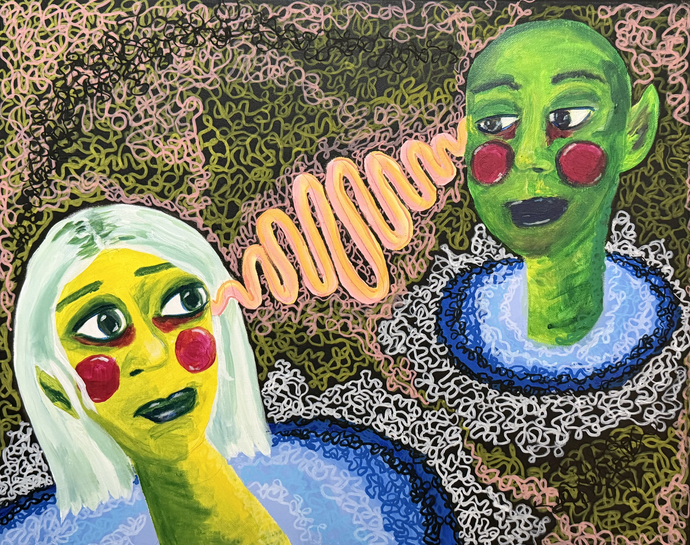

In Ancient Egyptian, there was no distinction between blue and green. These colors were defined by a single category: grue.
This piece explores perception before language, where boundaries between color, object, and meaning have yet to be defined.
Composed of handmade recycled paper and repeated painted eyes, the work forms a suspended field of looking, both observing and being observed.
As a curtain, it exists as a threshold: something to move through, something that interrupts, and something that sees you back.


Cellular biology, reimagined.
Through dense, looping marks and vivid color, these structures are embedded with a sense of movement and aliveness.
They are not scientific diagrams, but intuitive unfoldings of life at a microscopic scale.
BEINGS


Created as paired studies in portraiture and abstraction, these works explore how internal states can be translated through color, rhythm, and form.
Each diptych mirrors emotional and psychological textures across two visual languages: the face and the abstract field.
Through solar imagery, organic growth, and sacred play, this figure functions as a guardian presence rooted in warmth, light, and whimsy.


A study in emotional suspension, atmospheric movement, and detached presence.
A study in iterative process and reconstruction, where a previously unresolved portrait was revisited through layering, geometry, and structural detail.


As a recurring motif, this painting depicts two figures suspended in mutual observation, connected through a central frequency of energy, signal, or thought.